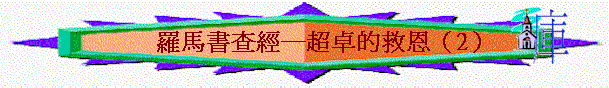

重溫：上次我們看過我們所相信的福音／信仰，比起其他思想、文化、宗教、榮耀、 超越的地方－－甚麼人都需要，猶太人需要，外邦人亦要，而得義、得恩的途徑是其他宗教思想想不到－－因信，這麼簡單就可以，今日我們看另一方面－－超卓的果效（PART Ａ）信耶穌，有甚麼特別的果效、改變呢？
引言：
你覺得信了耶穌後，有甚麼深刻的改變？試分享。羅５：１－１１提到信主後，人會有甚麼不同地方？會得到甚麼？
個人讀經：５：１－１１
三：
超卓的果效（PART A）１．VI．一開始，題到信耶穌後，除了在身份上能稱義外，在關係上，有甚麼改變？
有沒有試過同人有不和？ WHY？ 當時感受如何？ 信主後，有沒有試過與神有不和？ 如何復和？ 復和後的感覺如何？
２．在身份上我們稱義，在關係上我們與神相和好，在位置上，V2．我們有甚麼改變？ 如果信耶穌後，是現在站在這恩典中，未信時，我們站在甚麼範圍中。試用一些字眼、詞句、形容？ 今日你感受到自己現在是在恩典中？有甚麼恩典？試分享？
３．另外，在心態上我們有甚麼不同？ 未信前，有沒有試過歡樂？ 基督徒的歡樂同世人的歡樂有甚麼不同之處？（V2-5)
４．V2．題到有甚麼值得我們歡喜？ 在地上，有沒有見過一些景物，情景人物，十分榮耀、美麗，令你難忘？ 如果要用地上一個情景稍為同【神的榮耀】相比，你會用甚麼情景？ 在信仰路上，有沒試過在失意中，但想起神的榮耀而歡喜的經歷。試分享。
５．V3．題到『不但如此，就是在患難中，也是歡歡喜喜』基督徒為何在患難中也可以歡喜？
６．V3．『因為知道患難生忍耐』有沒有類似的經歷，在患難中，發現自己生命中產生一種忍耐特質？ 試分享。
７．『忍耐生老練』，何謂【老練】？
試用一個比喻、例子，來體會明白患難生忍耐，忍耐生老練，這真理？
８．『老練生盼望』，老練何以生出盼望？
又可否用一些生活例子表達此真理？
９．『盼望不至於羞恥』，有沒有試過盼望一些事情，或盼望得到一些成就，但最後是感到失 望、落空、羞恥？ 試分享。 基督徒對於明天，對於將來有甚麼盼望？
有沒有試過對於前景失去盼望的時候？
１０．V5．講出一個重要真理，我們經歷過甚麼事情，令我們可以肯定神給我們盼望 是不會落空呢？
為何神的愛可以令我們對前景，對將來所得盼望有一個肯定－－不會羞恥，不會落空，神一給呢？ V6．『因』－－似乎之後會有解釋，我們嘗試看一看！
１１．V6．一開始保羅帶我們回想以前的光景，在V6－10中講出我們以前的身份，地位、光景，狀況是怎樣的？
但在那段日子神如何愛我們，祂的愛有甚麼特別的地方？
１２．在過往，有沒有試過落於低沉，軟弱（自己也覺自己很差）光景中，但身邊有人仍愛你的經歷？ 當時有甚麼感受？
１３．現在我們又是甚麼光景，身份、地位（V9-11），V9-11重覆題到一個類似字眼？ 有甚麼意思？ 藉過去同現在的比較，想帶出甚麼真理？
１４．V10．題到『更要因他的生得救了』這得救是甚麼意思？
１５．所以基督徒為何盼望不至於羞恥，可以肯定自己所盼望必得著呢？
１６．最後，在V11．基督徒可以去到一個信仰的甚麼高峰？ 為何可以做到？
１７．你覺得自己現在的階段，是否做到以神為樂，做到幾多成？ WHY？
總結：羅５：１－１１提到信耶穌後，有甚麼改變，得著？
此段經文對自己有甚麼幫助？
下次查經：超卓的果效(PART Ｂ)──信耶穌還有什麼其他的改變呢？